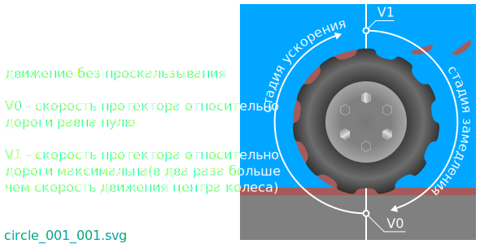

Автомобильные шины во время движения автомобиля по качественой дороге в сухую погоду преодолевают препятствия в форме перепадов высоты, а так же в форме естественой шероховатости качественой дороги.
Во время движения автомобиля по дороге покрытой слоем структуры недостаточно упругой, чтобы выдержать воздействие со стороны автомобиля, автомобильные шины используют часть энергии автомобиля для изменения этой структуры.
Простой пример такой структуры - на развилке глина местами покрывает асфальт в начале дороги ведущей к карьеру по добыче строительной глины.
Грузовики перевозящие глину могут на своих колесах переносить некоторую ее часть на близлежащие дороги.
Внезапный сильный ветер и дождь могут срывать или смывать неприкрытую часть груза из кузова.
Град так же может времено выступать в роли такой структуры.
В результате некоторая часть энергии тратится на изменение слоя и автомобиль может замедлиться или не ускориться должным образом.
Современые автомобильные шины производят с определеным рисунком протектора.
Части измененой структуры, которая до взаимодействия с автомобильной шиной покрывала слоем дорогу, могут застревать в воздушных промежутках протекторной части автомобильной шины.
В результате маса автомобильной шины увеличивается. Увеличеная маса автомобильной шины это дополнительное сопротивление, затрудняющее ускорение автомобиля.
Во время вращения протекторной части автомобильной шины, застрявшая глина может в стадии ускорения разогнаться и вылететь из воздушного зазора.
В этом случае глина забирает у автомобильной шины часть энергии на стадии ускорения и не отдает полученую энергию на стадии замедления.
В результате автомобильная шина замедляется дополнительно.

Автомобильные шины обычно содержат резину.
Резина пористый материал и содержит внутри сжимаемые газовые полости.
В процесе обката автомобильной шины по дороге, при в ходе в пятно контакта, резина упруго деформируется.
Скорость деформации зависит от скорости вращения автомобильной шины.
При выходе из пятна контакта на большой скорости часть протектора автомобильной шины может не успеть направить энергию сжатия на ускорение, если не успеет выпрямиться до начального состояния находясь в контакте с дорогой.
Резина может залипнуть на долю секунды и колесо не получит небольшую часть ускорения.
Обычно похожие явления, затрудняющие контролируемое перемещение с использованием автомобильных шин в качестве движетеля, называют сопротивлением качению.
Глина может содержать камни.
Вылетающие на большой скорости камни могут навредить водителю, попав в высунутую в окно руку(например во время стряхивания сигаретного пепела).
При большой скорости вращения автомобильной шины, камни вылетающие из протектора автомобильной шины могут повредить автомобиль, разрушая поверхность над колесом.
На грунтовых участках дороги несложно получить камнем по лобовому стеклу, следуя за автомобилем на небольшой дистанции.